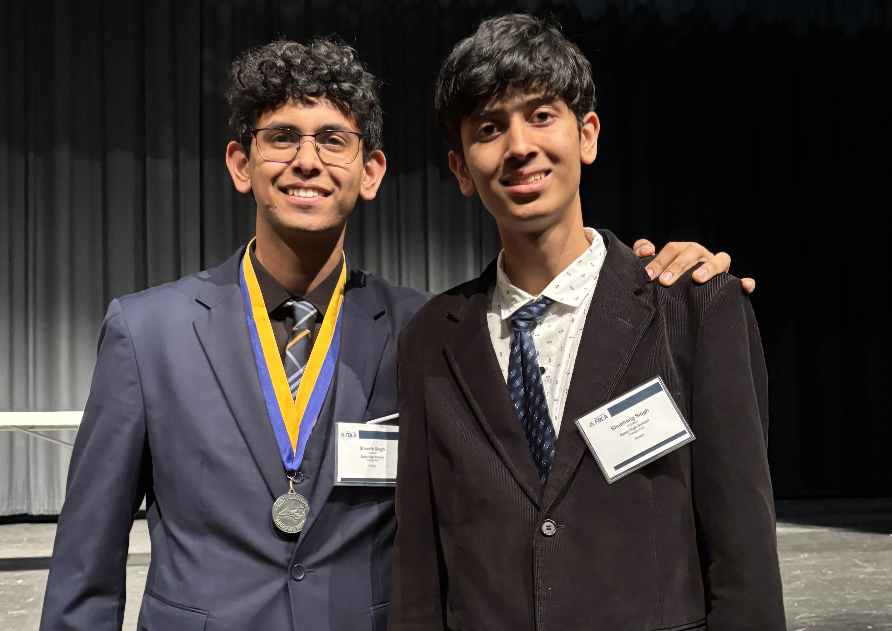
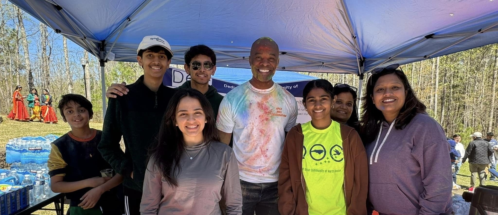

Leadership & Service

Founder & Lead Tutor — Apex Academix
Impact: Multi-letter grade improvements • +300 SAT points • +10 ACT points
I founded and led a personalized academic tutoring service supporting students across mathematics, physics, English, and standardized test preparation. In this role, I managed scheduling systems, developed individualized lesson plans, tracked student progress, and continuously refined instructional approaches based on performance data. Over the course of my work, students achieved multi-letter grade improvements in coursework as well as score increases of up to 300 points on the SAT and 10+ points on the ACT. This experience strengthened my ability to design structured systems, communicate complex ideas clearly, and take ownership of long-term outcomes.

Lead Volunteer & Mentor — Dedicated to Our Community of North Carolina (DOCNC)
Impact: $5,000+ raised • American Heart Association partnerships • Community education & sustainability initiatives
I served as a lead volunteer and mentor for community outreach initiatives focused on education and sustainability. My responsibilities included organizing events, developing lesson plans for younger students, coordinating volunteers, and supporting fundraising efforts in partnership with local organizations. Through collaboration with the American Heart Association, local law enforcement, and firefighters, I helped raise over $5,000 to support individuals with cardiac health needs and children from financially disadvantaged backgrounds. This role helped me develop leadership through service, teamwork across diverse groups, and the importance of clear organization and follow-through in mission-driven work.

Martial Arts Instructor & Program Assistant — Vision Martial Arts
Impact: Classes of 40+ students • Ages 3–75 • Safety-focused instruction & mentorship
I worked as a martial arts instructor, teaching classes of 40 students ranging from ages 3 to 75 across a wide age range in structured, safety-focused training environments. In addition to instruction, I supported program coordination and workshop organization. This experience reinforced discipline, responsibility, and effective feedback practices, as well as the importance of mentorship and clear communication in skill development.
These leadership experiences complement my technical work by reinforcing skills in communication, organization, mentorship, and accountability—qualities that are essential in collaborative engineering and research environments.